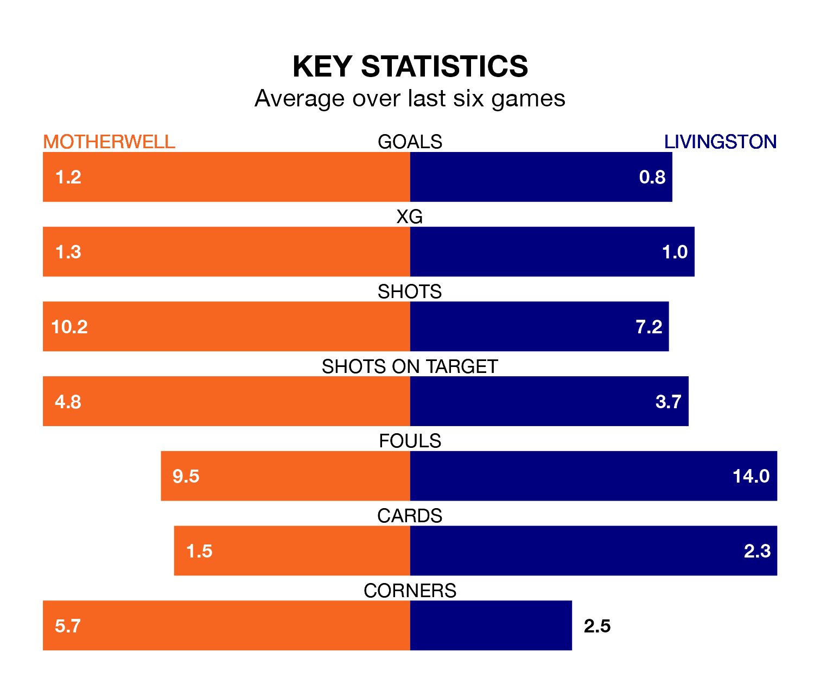

Struggling Livingston face Motherwell away at Fir Park on Saturday looking to build on a win in their last league outing.
After securing all three points with a 2-0 victory over Ross County on April 27, Livingston sit bottom of the Premiership.
They travel to play a Motherwell side ninth in the standings, who lost in their last match, 1-0 against Aberdeen.
With 24 goals in 34 games so far this season, Livingston are the league's lowest scorers with 0.7 goals per game. And they are conceding more than average, letting in 59 goals at a rate of 1.7 per game.
Motherwell, meanwhile, are above average scorers, with 1.4 goals per game, compared to a league average of 1.3. They have conceded 1.5 goals per game.
In the last 10 years, Motherwell and Livingston have played each other on 21 occasions. Motherwell won 12 of them, Livingston three, and they drew six times.
On average, Motherwell scored 1.7 goals and Livingston 1.0 in those matches.
Their last meeting was on February 28, when Motherwell won 3-1 away.
The home side are in mixed form in the Premiership, with two wins and two draws from their last six games.
With a win and two draws over that period, the visitors' form is worse – they have taken five points from 18, compared to Motherwell's eight.
In Thelonius Bair, Motherwell have one of the league's most on-form strikers so far this season. He has notched 13 goals in 34 appearances, to sit fifth in the scoring charts.
His goal rate of one every 176 minutes is quicker than that of Bruce Anderson, Livingston's top scorer with a goal every 278 minutes, and a total of six goals in 31 games.
Updated: 12:00 (UTC), 02/05/24